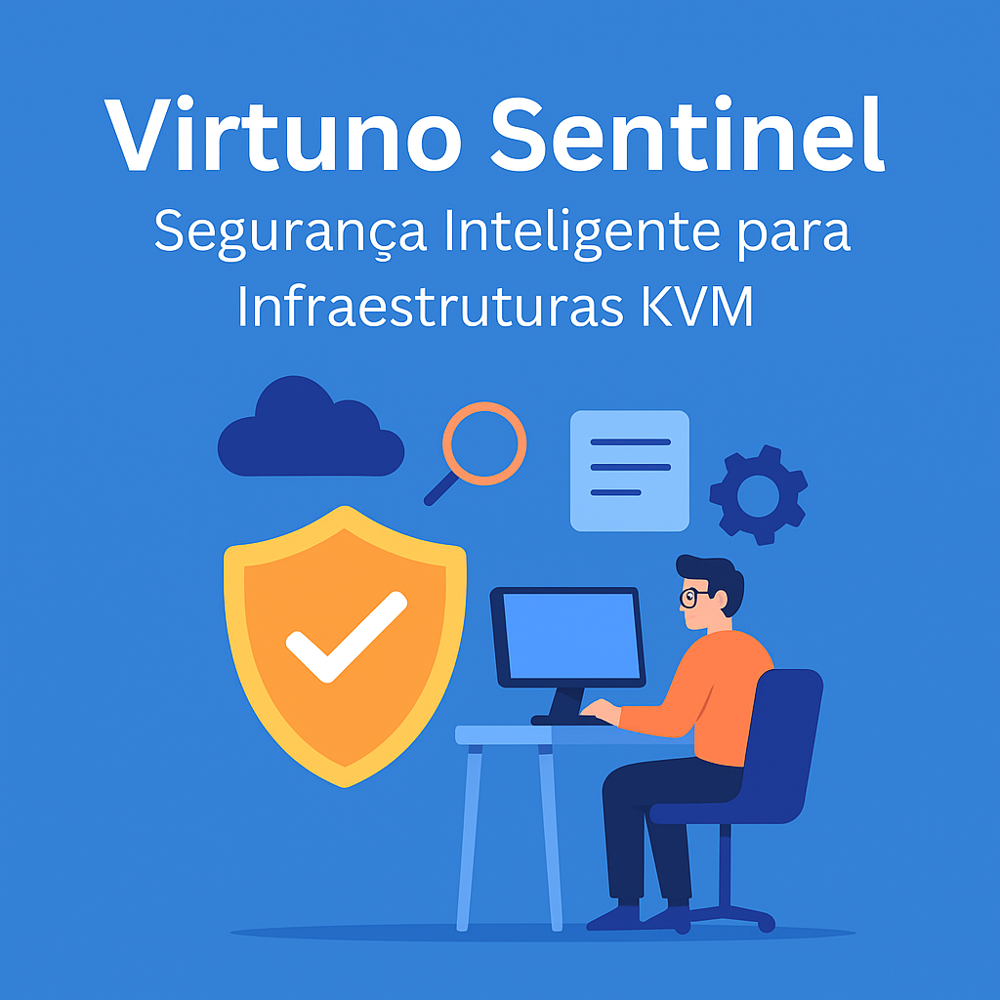

Publicado em 2025-05-13 11:31:55
No mundo da virtualização, garantir a integridade, estabilidade e segurança das máquinas virtuais é mais crítico do que nunca. O Virtuno Sentinel é o novo módulo de segurança do projeto Virtuno — uma solução avançada e autónoma que vigia, protege e alerta em tempo real.
À medida que mais serviços são virtualizados, os riscos aumentam: falhas de disco, corrupção de configurações, comportamentos anómalos nas VMs. Muitas soluções de segurança tradicionais não compreendem a natureza dinâmica de um hipervisor como o KVM. A resposta? Segurança integrada e pensada de raiz para ambientes virtuais.
No mundo da virtualização, garantir a integridade, estabilidade e segurança das máquinas virtuais é mais crítico do que nunca. O Virtuno Sentinel é o novo módulo de segurança do projeto Virtuno — uma solução avançada e autónoma que vigia, protege e alerta em tempo real.
O Virtuno Sentinel é composto por dois módulos principais:
sentinel.py.xml das VMs, discos, etc.)watchdog.pyO módulo Sentinel faz parte do projeto Virtuno, disponível como software livre no GitHub:
Instale já o Virtuno com segurança integrada:
Explore o repositório em GitHub
Por Francisco Gonçalves in TechNews